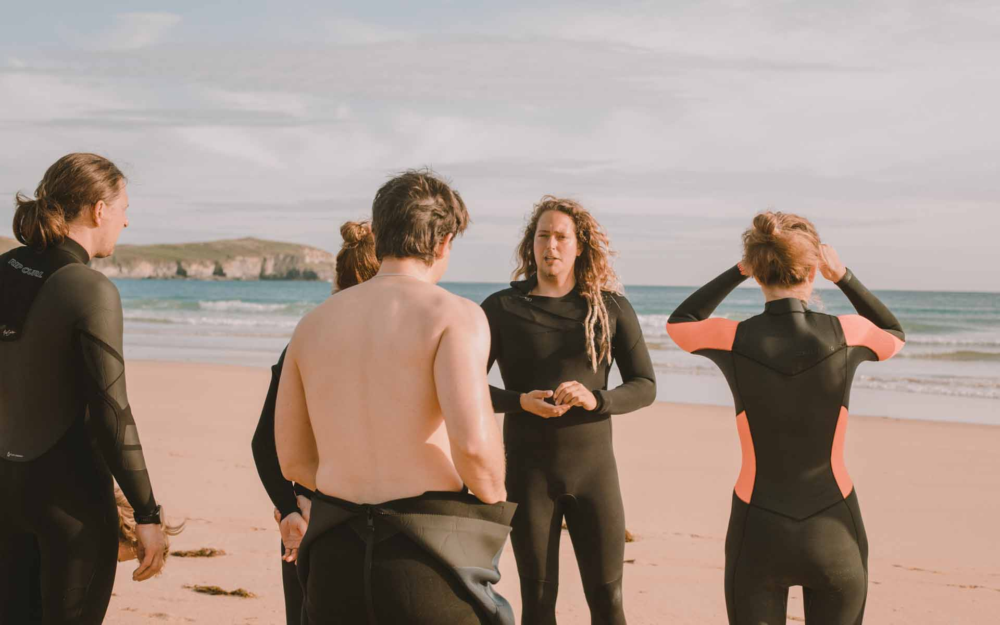
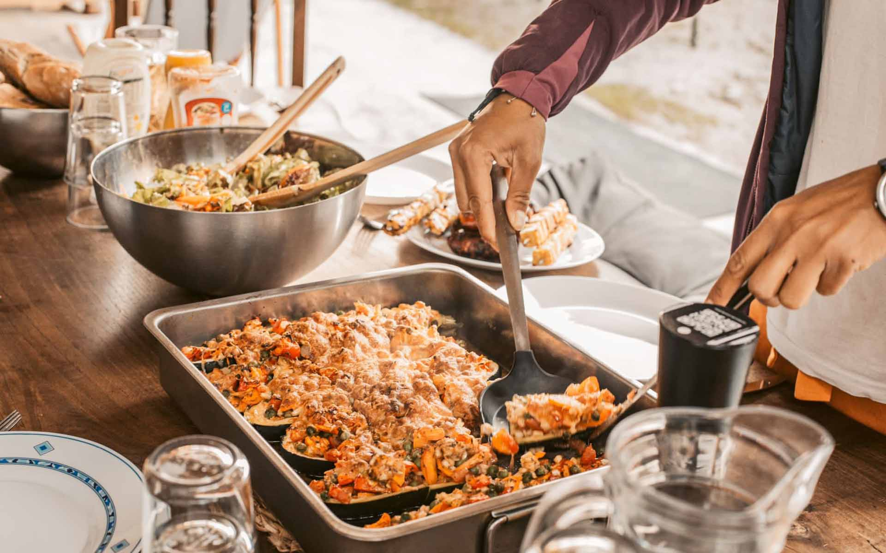
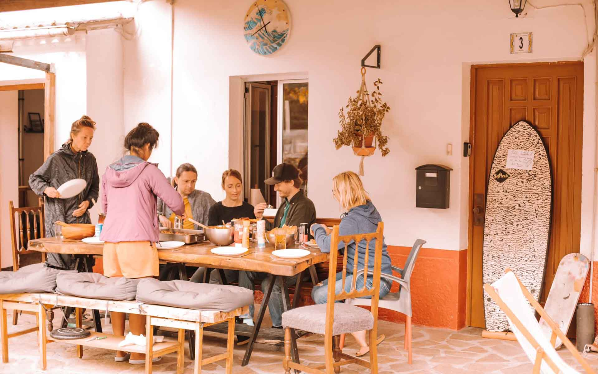
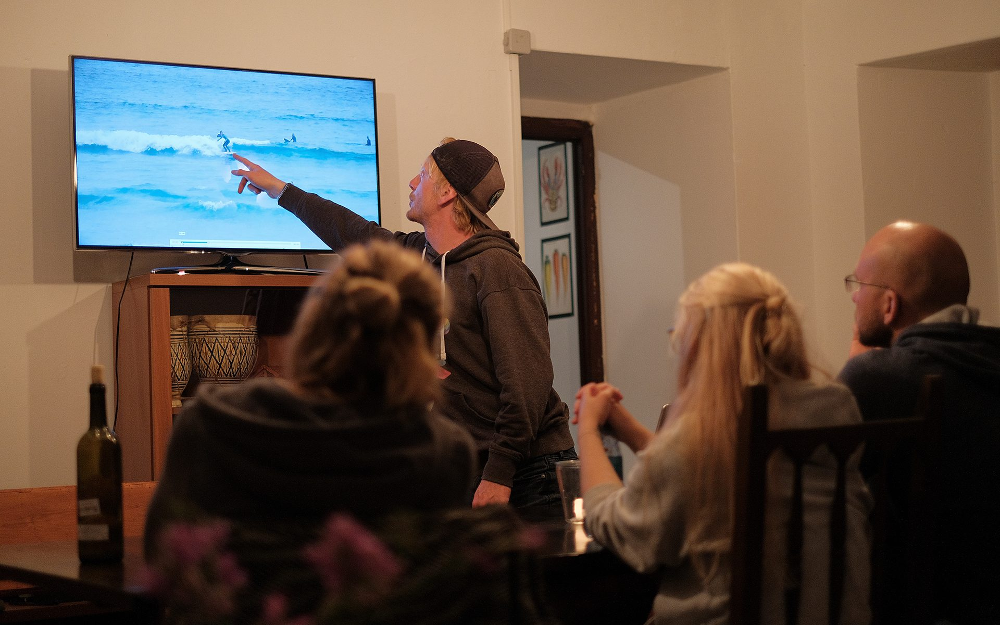
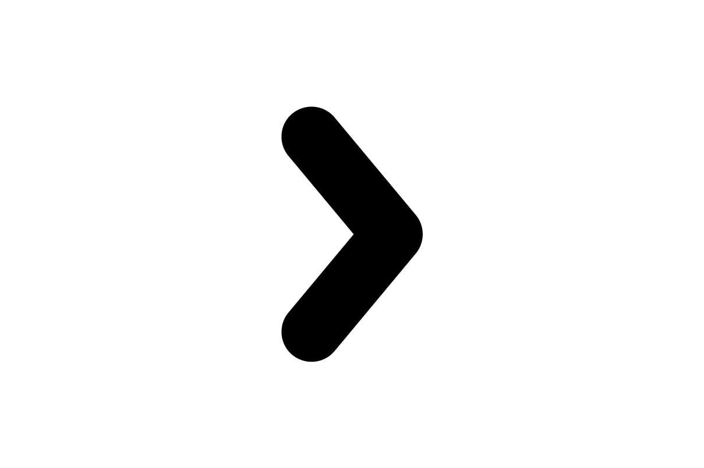
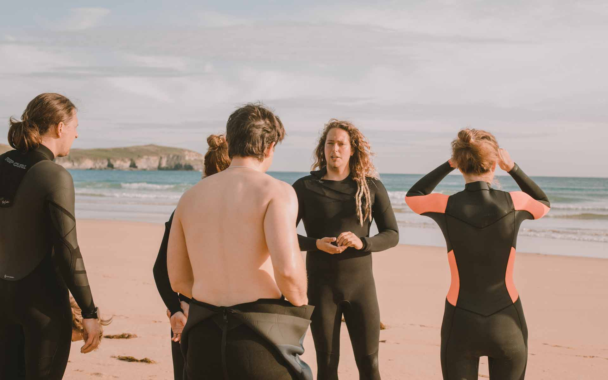
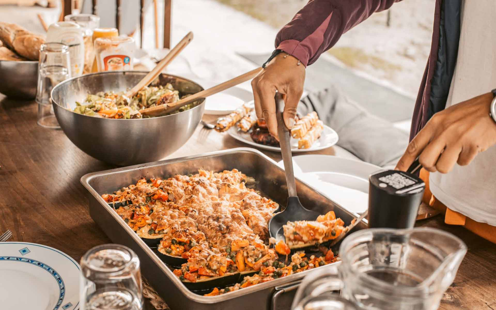
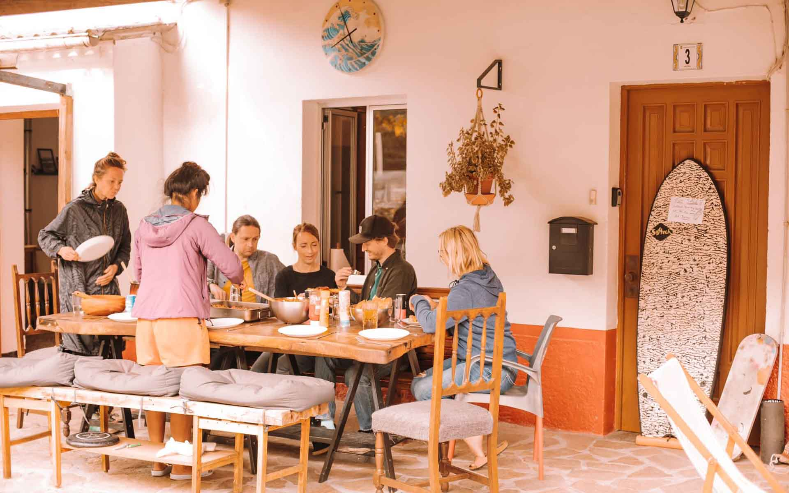
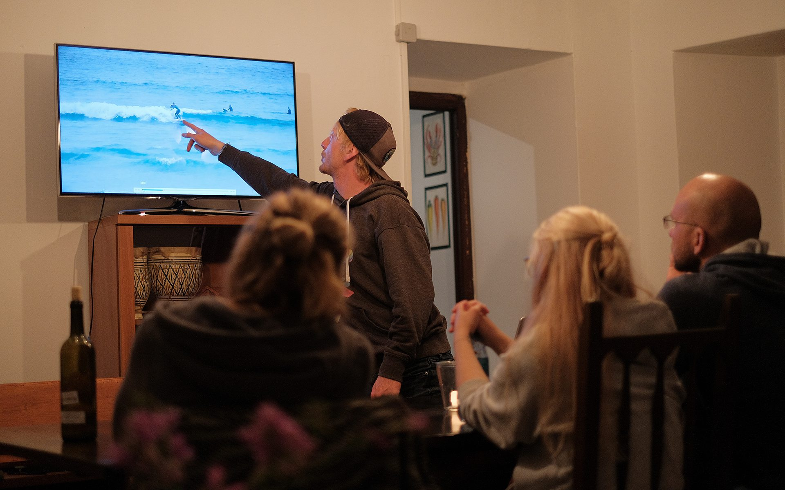
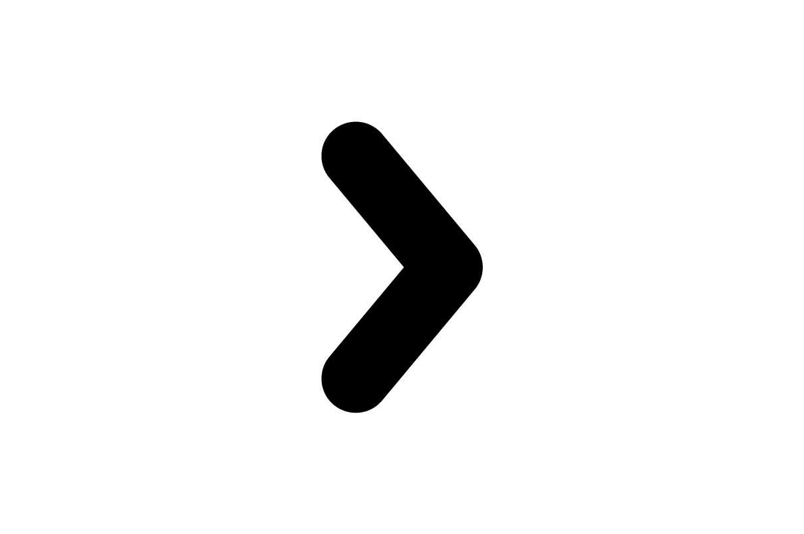

Europas erstes Intermediate Surfcamp für fortgeschrittene Surfer
Du hast bereits einige Erfahrungen im Surfen gemacht und möchtest deine Surftechnik auf das nächste Level bringen? Mit unserem Intermediate Surfcamp in Galicien wirst Du schon bald keine Probleme mehr haben, einen sauberen Bottom Turn oder Cutback in der Welle zu ziehen. In kleinen Gruppen, inklusive Videoanalyse und Bewegungstheorie, bringen Dich unsere erfahrenen Surfcoaches schnell an Dein neues Ziel – und das in einer der schönsten Regionen Nordspaniens!
 








